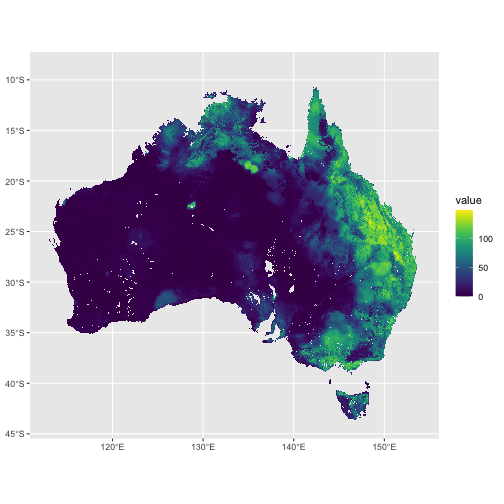

The {nert} package streamlines access to various Cloud-Optimised GeoTIFF (COG) datasets provided by the Australian Terrestrial Ecosystem Research Network (TERN), allowing you to easily incorporate these environmental datasets into your R analytics. Currently supported datasets in the {nert} package include:
- Daily volumetric soil moisture estimates from the Soil Moisture Integration and Prediction System (SMIPS),
- Actual evapotranspiration estimates using the CSIRO MODIS Reflectance-based Scaling EvapoTranspiration (CMRSET) algorithm,
- Soil orders from the Australian Soil Classification Map,
- Canopy height estimates from the OzTreeMap best-pick canopy height model,
- Australian land surface phenology based on thresholded MODIS Enhanced Vegetation Index (EVI) data,
- Soil and Landscape Grid of Australia (SLGA) datasets, including available volumetric water capacity, clay/sand/silt content, Bulk Density (whole earth) measurements, soil pH (CaCl2 and water), nitrogen and phosphorus content, cation exchange capacity, and the drained upper limit and 15-bar lower limit water content readings,
- Soil bacteria and soil fungi Beta Diversity datasets.
Installation instructions
{nert} is available through the R-Universe with pre-built binaries (this is the easy way).
To get started:
Install
install.packages("nert")The hard(er) way
Note that for Linux users, you will need to install system libraries to support geospatial packages in R, e.g., {sf} and {terra} as well as some packages for downloading data via curl, please see Note for Linux Installers. If you run into errors, e.g., Bad GitHub Credentials, please read this: Managing Git(Hub) Credentials and set up your GitHub credentials in R and try again.
You can install the development version of {nert} from GitHub with:
o <- options() # store original options
options(pkg.build_vignettes = TRUE)
if (!require("pak")) {
install.packages(
"pak",
repos = sprintf(
"https://r-lib.github.io/p/pak/stable/%s/%s/%s",
.Platform$pkgType,
R.Version()$os,
R.Version()$arch
)
)
}
pak::pak("AAGI-AUS/nert")
options(o) # reset optionsExample: reading a SMIPS COG as a spatial object
The {nert} package provides a number of convenient functions such as read_smips() which allow you to fetch COGs from the TERN Data Portal for use in your R session. The below code fetches the SMIPS soil moisture raster for the 1st of January 2024, and then uses the {terra} package’s extract() function to get a soil moisture estimate for the Adelaide CBD. Note that since these are cloud-optimised COGs, they employ Just-In-Time data streaming: that is, only the bytes necessary for the spatial extent we actually need are downloaded, resulting in significant time and disk-space savings.
library(nert)
library(terra)
#> terra 1.9.34
r <- read_smips(date = "2024-01-01")
extract(r, xy = TRUE, data.frame(lon = 138.6007, lat = -34.9285))
#> ID smips_totalbucket_mm_20240101 x y
#> 1 1 46.07692 138.6037 -34.93254The {nert} package also re-exports {tidyterra}’s autoplot() function, which can be used to create a visualisation of the Australia-wide data rasters.
autoplot(r)
#> <SpatRaster> resampled to 501270 cells.
Extract Values in Bulk Given Lat/Lon Values
The {nert} package also provides a convenient function collect_tern_data() which allows you to easily grab multiple TERN datasets across multiple times and multiple spatial locations. For example, the below code grabs the SMIPS “totalbucket” and SLGA “CLY” clay content estimates at 0-5cm and 5-15cm depths, across the first week of 2024 at Merriden, WA and Tamworth, NSW:
dat <- collect_tern_data(
xy = data.frame(lon = c(118.28, 150.84), lat = c(-31.48, -31.07)),
date_range = c("2024-01-01", "2024-01-07"),
datasets = c("SMIPS", "CLY"),
smips_collection = "totalbucket",
depth = c("000_005", "005_015"),
stat = "EV",
verbose = FALSE
)
head(dat)
#> date lon lat SMIPS_totalbucket CLY_EV_000_005 CLY_EV_005_015
#> <Date> <num> <num> <num> <num> <num>
#> 1: 2024-01-01 118.28 -31.48 0.2271653 11 15
#> 2: 2024-01-01 150.84 -31.07 93.4498901 28 31
#> 3: 2024-01-02 118.28 -31.48 0.2135102 11 15
#> 4: 2024-01-02 150.84 -31.07 90.6175690 28 31
#> 5: 2024-01-03 118.28 -31.48 0.2344290 11 15
#> 6: 2024-01-03 150.84 -31.07 88.5260391 28 31Keeping {nert} Updated
{nert} is undergoing active development and is not yet on CRAN. If you installed {nert} using the R-Universe (the preferred method), you can keep {nert} up-to-date locally like so:
and answering yes or y when asked if you would like to upgrade {nert}.
Note for Linux Installers
If you are using Linux, you will likely need to install several system-level libraries, {pak} will do it’s best to install most of them but some may not be installable this way. For Nectar with a fresh Ubuntu image, you can use the following command to install system libraries to install {pak} and then install {fifo}. In your Linux terminal (not your R console, the “terminal” tab in RStudio should do here in most cases) type:
Citing {nert}
To cite nert:
citation("nert")
#> To cite package 'nert' in publications use:
#>
#> Sparks AH, Pipattungsakul W, Edson R, Rogers S, Moldovan M (2026).
#> nert: Curated Access to TERN Environmental Raster Data. R package version
#> 1.1.0. https://aagi-aus.github.io/nert/
#>
#> A BibTeX entry for LaTeX users is
#>
#> @Manual{,
#> title = {{nert}: Curated Access to TERN Environmental Raster Data},
#> author = {Adam H. Sparks and Wasin Pipattungsakul and Russell Edson and Sam Rogers and Max Moldovan},
#> year = {2026},
#> note = {R package version 1.1.0},
#> url = {https://aagi-aus.github.io/nert/},
#> }